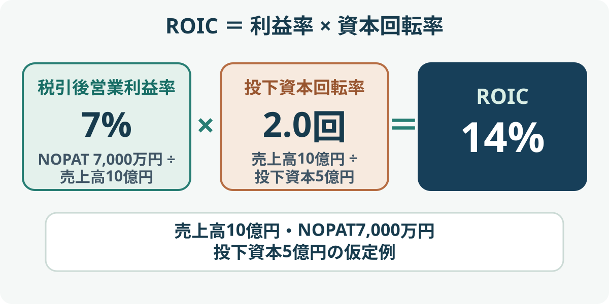

COMPANY ANALYSIS / FINANCIAL METRICS
ROICとは？投下資本利益率の計算方法とWACCとの関係
ROIC（投下資本利益率）は、企業が事業に投じた資本を使って、どれだけ税引後の営業利益を生み出したかを測る指標です。ROA・ROEと異なり、事業に使う資本と、その資本を調達するコストを比べることで、企業が資本コストを上回る価値を生み出しているかを考える手掛かりになります。
1. ROICとは何か
ROICは「Return on Invested Capital」の略で、日本語では投下資本利益率と呼ばれます。会社が事業活動のために投じた資本を分母にし、その事業から得た税引後営業利益を分子にして、資本を使う効率を割合で表します。
企業は株主から出資を受けるだけでなく、銀行借入や社債などでも資金を調達します。ROEは主に株主資本に対する最終利益を測りますが、ROICは株主資本と有利子負債など、事業に使う資本全体に着目します。そのため、借入の多さに左右されにくい形で、事業そのものの資本効率を分析する際に使われます。
ROICは企業経営の指標としても利用されますが、投資家にとっても、企業が設備・在庫・売掛金などに資金を投じ、その資金からどれほど利益を生み出しているかを考える材料になります。
2. ROICの計算方法
NOPAT（税引後営業利益）
NOPATは「Net Operating Profit After Tax」の略で、営業利益から、営業利益に対応するみなし税金を差し引いた利益です。一般的な簡便計算では、次の式を使います。
ここでいう実効税率は、ROICを計算するために営業利益へ適用する税率です。実際の法人税等には税務上の調整や一時差異などが含まれるため、損益計算書の法人税等をそのまま営業利益から引く計算とは一致しないことがあります。企業が独自に調整後NOPATを開示している場合は、その定義も確認します。
投下資本
投下資本は、事業を運営するために実際に使っている資本です。算出方法には、資金をどこから調達したかを見る方法と、資金を何に使っているかを見る方法があります。
| 見方 | 計算例 | 考え方 |
|---|---|---|
| 調達側から見る | 株主資本＋有利子負債−非事業用資産 | 株主・金融機関などから調達し、事業に投じた資本を捉える |
| 運用側から見る | 運転資本＋事業用固定資産 | 売掛金・棚卸資産・設備など、事業運営に使う資産から事業負債を差し引いて捉える |
「非事業用資産」には、事業に必要な水準を超える余剰現金や、事業活動に直接使っていない投資資産などが含まれる場合があります。どこまでを事業用とみなすかで投下資本は変わるため、企業の開示資料や分析目的に応じた定義を確認してください。
期中の資本変動が大きい企業を比較する場合は、期末の投下資本だけでなく、期首・期末平均など期間に対応した分母を使う方法もあります。分子が1年間の利益であるのに対し、分母が一時点の残高である点を意識し、比較する企業間で基準をそろえます。
3. 数値例でROICを計算する
ある企業の1年間の業績と資本を、次のように仮定します。金額は計算方法を示すための架空の例です。
| 項目 | 金額・条件 |
|---|---|
| 売上高 | 10億円 |
| 営業利益 | 1億円 |
| 実効税率（仮定） | 30% |
| 株主資本 | 3億5,000万円 |
| 有利子負債 | 2億円 |
| 非事業用資産（余剰現金等） | 5,000万円 |
| 投下資本 | 3億5,000万円＋2億円−5,000万円＝5億円 |
まず、営業利益1億円に税率30%を適用し、NOPATを計算します。
次に、NOPAT7,000万円を投下資本5億円で割ります。
この仮定例では、企業は事業に投じた5億円に対して、税引後営業利益7,000万円を生み出しており、ROICは14%です。これは株主が株式を保有した場合の利回りや、株価の期待リターンが14%という意味ではありません。事業に使う資本と、事業から得た利益の関係を示しています。
4. 利益率と投下資本回転率に分解する
ROICは、税引後営業利益率と投下資本回転率に分解できます。ROICが高い・低いという結果だけでなく、利益率が高いのか、資本を効率よく回して売上を作っているのかを考えるための見方です。
- 税引後営業利益率：NOPAT ÷ 売上高。売上高から税引後営業利益をどれだけ残せたかを示します。
- 投下資本回転率：売上高 ÷ 投下資本。事業に投じた資本から、どれだけ売上高を生み出したかを示します。

上の例では、税引後営業利益率は7,000万円÷10億円＝7%、投下資本回転率は10億円÷5億円＝2.0回です。両者を掛けると、7%×2.0回＝14%となり、ROICの計算結果と一致します。
利益率を改善するには、価格設定、製品構成、原価、販管費などが関係します。投下資本回転率を改善するには、在庫や売掛金の管理、設備稼働率、遊休資産の見直しなどが関係します。どちらを改善すべきかは事業モデルによって異なります。
5. ROICとWACCの関係
ROICを企業価値の分析に使うときは、WACC（Weighted Average Cost of Capital：加重平均資本コスト）と比較します。WACCは、株主資本コストと負債コストを、それぞれの調達割合に応じて加重平均した資金調達コストです。
ROICがWACCを上回る場合、事業が生み出すリターンは資本を調達・使用するコストを上回っています。反対にROICがWACCを下回る場合、会計上は利益が出ていても、資本コストを考慮すると十分なリターンを生み出せていない可能性があります。
経済的利益（EP）で金額に置き換える
ROICとWACCの差を、投下資本に対する金額で表したものが経済的利益（Economic Profit：EP）です。
＝ 投下資本 ×（ROIC − WACC）
先ほどの例で、投下資本5億円、ROIC14%に対して、WACCを仮に8%とします。
| 項目 | 計算 | 結果 |
|---|---|---|
| NOPAT | 営業利益1億円×（1−30%） | 7,000万円 |
| 資本コスト | 投下資本5億円×WACC8% | 4,000万円 |
| 経済的利益 | 7,000万円−4,000万円 | 3,000万円 |
| ROICスプレッド | 14%−8% | ＋6ポイント |
この仮定では、資本コストを差し引いた後も3,000万円の経済的利益が残ります。実際のWACCは、株主資本コスト、負債コスト、資本構成などから推計するもので、企業や分析者によって前提が異なります。ここでの8%は説明用の仮定であり、全企業に共通する基準値ではありません。
6. ROA・ROEとの違い
ROA・ROE・ROICはいずれも資本効率を見る指標ですが、分子と分母が異なります。
| 指標 | 分子 | 分母 | 主な視点 |
|---|---|---|---|
| ROA | 当期純利益など | 総資産 | 会社が保有する資産全体の収益性 |
| ROE | 当期純利益 | 自己資本 | 株主資本に対する収益性 |
| ROIC | 税引後営業利益（NOPAT） | 事業に投じた資本 | 事業に使う資本の効率と資本コスト |
ROAは事業用資産以外も含む総資産を使うため、余剰現金や非事業資産を多く持つ企業では、事業そのものの効率が見えにくくなることがあります。ROICは事業に使う資本を切り分ける点が特徴です。一方、投下資本の定義を調整する手間があり、企業間で計算基準がそろわない場合があります。
ROEは株主に帰属する利益と自己資本の関係を見るため、借入の活用や自己資本の変化で数値が大きく変わることがあります。ROICは営業利益を基にするため、資金調達方法の違いを切り離して事業効率を見やすい指標です。
それぞれの計算方法を詳しく確認する場合は、ROA（総資産利益率）とROE（自己資本利益率）の記事も参照してください。
7. 企業分析での使い方
- 定義をそろえる：NOPATの税率、投下資本に含める負債・現金・固定資産、期末残高か平均残高かを確認します。
- 複数年の推移を見る：単年度のROICだけでなく、景気や一時的な利益の影響を除いて、数年間の推移を見ます。
- 同業他社と比較する：設備や在庫を多く必要とする業種と、資産をあまり必要としない業種を単純比較せず、事業モデルが近い企業同士で比較します。
- ROICを分解する：利益率と投下資本回転率のどちらが変化したのかを確認し、価格・原価・在庫・設備投資などの要因を調べます。
- WACCと成長投資を見る：ROICとWACCの差だけでなく、投下資本を増やす投資が将来どの程度の利益を生むか、投資回収までの時間も確認します。
- 財務諸表に戻る：営業利益、運転資本、設備投資、有利子負債、現預金などを確認し、ROICの改善が事業の競争力向上によるものかを考えます。
特に注意したいのは、ROICを上げることだけを目的にしないことです。設備投資や研究開発、人材投資の直後は、先に投下資本が増え、利益が後から伸びるため、ROICが一時的に低下することがあります。将来の資本コストを上回るリターンが見込める成長投資まで抑えれば、短期的なROICは上がっても、企業価値の成長を損なう可能性があります。
8. ROICを見るときの注意点
- 投下資本の定義が統一されていない：余剰現金、リース負債、のれん、非事業資産などをどう扱うかで数値が変わります。
- NOPATは会計上の当期純利益とは異なる：営業利益にみなし税率を適用するため、実際の法人税等や特別損益を反映した当期純利益とは一致しません。
- 過去の投資が帳簿価額に影響する：古い設備を使い続けている企業は、資産の帳簿価額が小さくなり、ROICが高く見えることがあります。
- 成長投資の初期には低下し得る：新工場・新店舗・研究開発などの投資は、利益が本格化する前に分母を増やします。短期の低下だけで投資の失敗とは判断できません。
- 金融機関は単純比較しにくい：銀行・保険などは負債や資産が事業モデルの中心にあるため、一般事業会社と同じ投下資本の考え方を当てはめにくい場合があります。
- 高ROICでも成長余地が小さい場合がある：資本をほとんど追加せず高い利益率を維持している企業と、資本を増やして成長する企業では、企業価値の伸び方が異なります。
ROICは企業の価値創造を考える重要な指標ですが、単独で株価の割安・割高や将来の株主リターンを判断するものではありません。利益の持続性、競争優位、投資機会、財務リスク、株価に織り込まれた期待も合わせて確認しましょう。
まとめ
ROICは、事業に投じた資本から税引後営業利益（NOPAT）をどれだけ生み出したかを示す指標です。NOPATを投下資本で割って計算し、税引後営業利益率と投下資本回転率に分解できます。さらにWACCと比較することで、資本コストを上回るリターンを生み出しているかを考えられます。
ROAは総資産全体、ROEは株主資本、ROICは事業に投じた資本を見るという違いを押さえ、計算基準・複数年の推移・成長投資を確認することが、企業分析での実践的な使い方です。
参考資料
- 経済産業省「成長投資ガイダンス」（2026年7月21日公表） — ROIC・NOPAT・投下資本・WACC・経済的利益の定義。
- 経済産業省「第9回 価値創造経営小委員会」 — 成長投資ガイダンス本文・エグゼクティブサマリー等の資料。
- 経済産業省「ROICの算出式」（2023年3月31日資料） — ROA・ROE・ROICの算出式と評価視点の比較。
- 野村総合研究所「ROIC（投下資本利益率）」 — ROICの基本的な意味とROEとの違い。